Markenhandbuch · Corporate Design
TIMEOUT Annweiler
Ihre Auszeit in Annweiler am Trifels.
Version 1.0 · Stand 10. Oktober 2026
Markenhandbuch TIMEOUT Annweiler
Inhalt
Online: Navigation oben. Druckfassung: A4 quer, jedes Kapitel beginnt auf einer neuen Seite.
01
Markenkern und Tonalität
Wofür TIMEOUT steht und wie wir schreiben. Texte wörtlich aus den Textbausteinen.
Positionierung
TIMEOUT ist das Kosmetikinstitut in der Altenstraße in Annweiler am Trifels. Gesichtsbehandlungen, Wimpern und Brauen, Nägel, Fußpflege und Solarium finden Sie bei uns unter einem Dach. Der Name ist unser Anspruch: Bei uns bekommen Sie eine Auszeit vom Alltag – mit Zeit für Beratung und einer Behandlung, die wir auf Sie abstimmen.
Markenversprechen
Bei TIMEOUT bekommen Sie Zeit, eine ehrliche Beratung und eine sorgfältige Behandlung – in Annweiler am Trifels.
Claim
Ihre Auszeit in Annweiler am Trifels.
Kurzform für kleine Flächen: „Ihre Auszeit in Annweiler.“
Verhältnis TIMEOUT und JD Cosmetic
Das Logo stammt von JD Cosmetic, der Marke der Familie; Studio, Behandlungen, Termine und Angebote kommen immer von TIMEOUT Annweiler, Inhaberin Jasmin Hadjieff.
Regel dazu: In Werbung und Angeboten steht als Anbieter immer „TIMEOUT Annweiler“, nie „JD Cosmetic“ allein (sonst ist der Anbieter unklar, UWG § 5).
Markenkern
Werte
| Wert | Was er im Studio bedeutet | Woran man ihn in Texten erkennt |
|---|---|---|
| Auszeit | Termine ohne Hektik, ein ruhiger Raum, Zeit für Fragen. | Einladende Sprache, keine Rabattschreie, keine Countdown-Rhetorik. |
| Sorgfalt | Hygiene, ein fester Ablauf je Behandlung, saubere Arbeit an Händen, Füßen, Wimpern und Haut. | Ablauf konkret beschreiben („Reinigung – Peeling – Maske – Pflegecreme“) statt Ergebnisse versprechen. |
| Ehrliche Beratung | Wir sagen, was eine Behandlung ist und was nicht; ob sie passt, klären wir vorab. | Keine Garantien, keine Superlative; „besprechen wir gern mit Ihnen“. |
| Persönlich und vor Ort | Inhaberin Jasmin Hadjieff und ihr Team in Annweiler, erreichbar per Telefon und im Studio. | Direkte Ansprache, Ort nennen (Annweiler am Trifels, Südliche Weinstraße), echte Fotos aus dem Studio. |
Lokale Stammdaten (NAP) – überall gleich schreiben
TIMEOUT Annweiler Altenstr. 5 76855 Annweiler am Trifels
Ortsname immer vollständig „Annweiler am Trifels“ (Local SEO, gleiche Schreibweise wie auf der Website und bei Google); im Fließtext darf beim zweiten Nennen „Annweiler“ stehen. Region: „Südliche Weinstraße“ (Landkreis) bzw. „Pfalz“. Telefonnummern im Format nach DIN 5008 mit Leerzeichen („0178 5333746“), Inhalt unverändert aus dem Footer.
Schreibweise
Schreibweise: Im Fließtext „TIMEOUT“ in Großbuchstaben; mit Ort „TIMEOUT Annweiler“, im Logo-Zusatz „TIMEOUT · Annweiler“. Leistungsnamen wie auf der Website, mit den vereinbarten Änderungen. Emojis in Social Media sparsam (höchstens zwei je Beitrag), nie in Print.
Tonalität
Anrede: Sie und du
Bestehende Praxis auf der Live-Seite: Startseite, „Leistungen“ und alle Behandlungstexte sprechen mit Sie an; „Schulungen“ und die Kursseiten mit du. Das „du“ auf „Angebote des Monats“ stammt aus dem entfernten JD-Cosmetic-Block und gilt nicht als Praxis. Festlegung:
| Kanal | Anrede |
|---|---|
| Website, Leistungen, Preisliste, Gutschein, Terminkarte, Türschild, E-Mail, Brief | Sie |
| Schulungen (Website, Kurs-Unterlagen, Posts zu Kursen) | du |
| Instagram, Facebook, Google (Kundschaft) | Sie (vorläufig) |
Innerhalb eines Textes nie wechseln. „Ihr/Ihre“ immer groß, „du/dein“ klein (Duden-Empfehlung).
Tonalität
So schreiben wir: Do und Don't
| Do | Beispiel | Don't | Beispiel |
|---|---|---|---|
| Ablauf beschreiben | „Reinigung, Peeling, Massage, Maske und Pflegecreme – rund eine Stunde nur für Sie.“ | Ergebnis versprechen | „Danach sind Sie zehn Jahre jünger.“ |
| Wirkung als Eindruck formulieren | „für ein frischer wirkendes Hautbild“ | Garantie oder „sorgt für“ | „sorgt garantiert für strahlende Haut“ |
| Hautzustand beschreiben | „für reife Haut“, „für unreine Haut“ | Krankheit nennen | „gegen Akne“, „gegen Narben“, „Aknebehandlung“ |
| Zur Beratung einladen | „Ob die Behandlung zu Ihrer Haut passt, besprechen wir gern vorab.“ | Für alle versprechen | „wirkt bei jeder Haut“ |
| Konkret und kurz | „Gelnägel ab 50 €. Termin unter …“ | Füllwörter, Ausrufezeichen-Ketten | „Mega!!! Jetzt zugreifen!!!“ |
| Ort nennen | „in Annweiler am Trifels“ | Austauschbare Floskeln | „Ihr Beauty-Paradies“ |
| Preise nur aus der Preisliste | „45 € · mit Dekolleté 61 €“ | Preise schätzen oder Streichpreise ohne Zeitraum | „statt 129 €“ ohne Zeitraum |
| Sachlich bei Behandlungen mit Erlaubnisfrage | Name, Ablauf, Dauer, Preis | Diese Behandlungen in Aktionen, Posts oder Hashtags bewerben | „Microneedling-Special“ |
| Warm und höflich | „Wir freuen uns auf Sie.“ | Druck oder Angst | „Ihre Haut altert jeden Tag – handeln Sie jetzt!“ |
Tonalität
Wortliste
| Bevorzugt | Vermeiden | Grund |
|---|---|---|
| Behandlung, Pflege, Anwendung | Therapie, Heilung, heilen, Kur (im Sinne von Heilkur) | Heilbezug; „Kurangebot“ nur als Preisbezeichnung wie auf der Website |
| Lichtbehandlung | Lichttherapie, Farblichttherapie | Heilbezug |
| Farblicht-Solarium, Bräunung | „natürlich und sanft“, „gesunde Bräune“, Stimmungsversprechen | Gesundheits- und Stimmungsversprechen; UV-Strahlung nicht verharmlosen |
| für unreine Haut*, für reife Haut | Akne, Pickel, Narben, Falten (als Ziel), Hautkrankheit, Entzündung | Krankheitsbezug; *„unreine Haut“ nur nach rechtlicher Klärung verwenden |
| frischer wirkend, ebenmäßiger wirkend, gepflegt | verjüngt, Anti-Aging, Faltenreduktion, straff (als Versprechen) | Garantien und Erfolgsversprechen |
| kann sich gut anfühlen, entspannend | sorgt für, garantiert, sofort sichtbar, dauerhaft, bis zu … Monate | Garantien und Angaben ohne Beleg |
| Pflegeserum, Wirkstoffserum | Zellen, Wachstumsfaktoren, Collagenbildung, Regeneration, Booster | Aussagen über Zellen und Regeneration |
| Collagenvlies | medizinisch, klinisch, Studie, dermatologisch getestet, Prozentangaben | Angaben ohne geprüften Beleg; „medizinisch“ suggeriert ein Arznei- oder Medizinprodukt |
| Fußpflege, Pediküre | medizinische Fußpflege | geschützte Berufsbezeichnung Podologie (PodG) |
| Beratung, besprechen, abstimmen | jede Haut, für alle, der/die/das Beste, ultimativ, einzigartig | Superlative, Alleinstellung |
| Kosmetikinstitut, Kosmetikstudio | Klinik, Praxis, Behandlungszentrum | erweckt Eindruck einer Heilbehandlung |
| TIMEOUT Annweiler als Anbieter | „bei JD Cosmetic buchbar“ | Anbieter klar nennen (UWG § 5) |
02
Logo
Das JD-Logo ist das Logo von TIMEOUT, unverändert, mit dem Zusatz „TIMEOUT · Annweiler“. Vektor-Nachzeichnung des Originals mit 98,57 % Deckung.
Das Logo selbst bleibt unverändert (Gold-Verlaufsring, Linienzeichnung mit „J“, „D“ und Gesicht, Schriftzug „Cosmetic“). Alle Dateien sind aus einer Vektor-Nachzeichnung des Originals erzeugt (Deckung 98,57 %); Varianten tauschen nur Farben, Lockups ergänzen den Zusatz. Zusatz: „TIMEOUT“ in Cormorant Garamond 600 (leicht gesperrt), „ANNWEILER“ in Montserrat 500 (gesperrt), beide als Pfade (SIL Open Font License), es muss keine Schrift installiert sein. In Fließtext und einzeiligen Angaben heißt der Name „TIMEOUT · Annweiler“.
Logo-Familie
Varianten
Original, farbig, transparenter Grund
Ring Gold, Linien und „Cosmetic“ in Creme
Gold
#987848, Espresso #383028 oder Creme #F5EEE4; Ring und Linien um die Schrift freigestelltGold
#987848, Espresso #383028 oder Creme #F5EEE4; Ring und Linien um die Schrift freigestellt
Gold
#987848, Espresso #383028 oder Creme #F5EEE4; Ring und Linien um die Schrift freigestelltRing + Zeichnung, ohne „Cosmetic“
Ring + Zeichnung, ohne „Cosmetic“
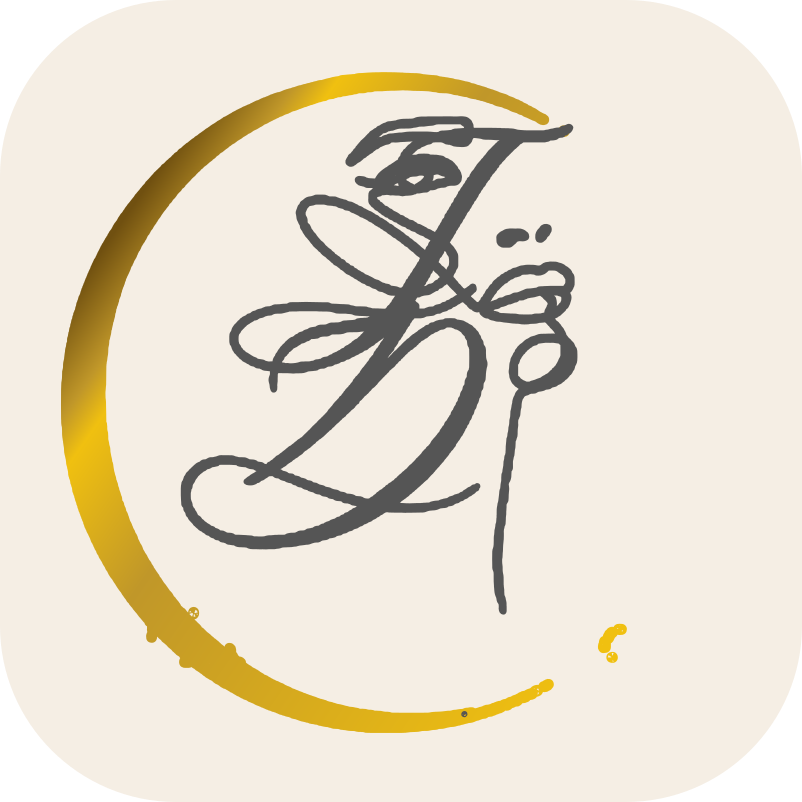
Bildzeichen auf Creme-Kachel mit abgerundeten Ecken, Ring und Linien nur leicht verstärkt, für 16–48 px (lesbar auf hellen und dunklen Browser-Tabs)
Logo-Familie
Logo mit Zusatz (Lockups)
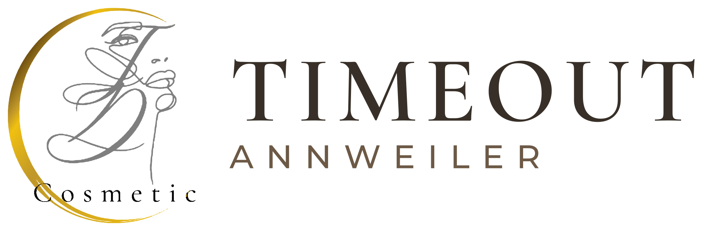
Logo links, rechts „TIMEOUT“ über „ANNWEILER“
Logo links, rechts „TIMEOUT“ über „ANNWEILER“
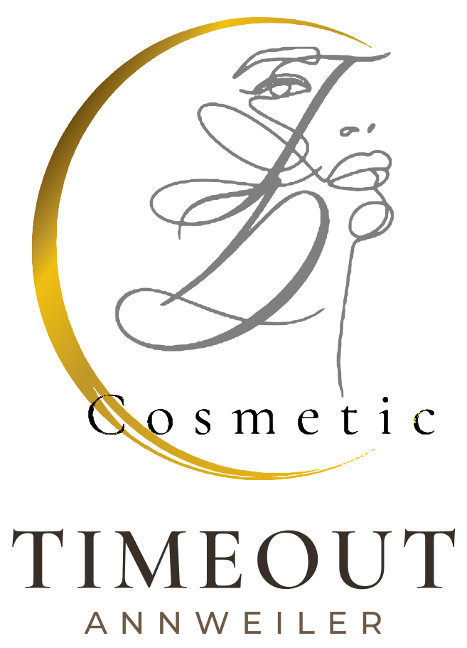
Logo oben, Zusatz zentriert darunter
Logo oben, Zusatz zentriert darunter
Bildzeichen + „TIMEOUT“ (Kopf mobil)
Logo
Schutzzone und Mindestgrößen
Gestrichelt: Schutzzone = ⅛ des Ringdurchmessers (Ring ≈ Logohöhe).
Rund um Logo, Lockup und Bildzeichen bleibt mindestens ein Achtel des Ringdurchmessers frei (bei 120 px Logohöhe ca. 15 px, im Lockup quer bei 300 px Breite ca. 12 px). In diesen Raum ragen weder Text, Linien, Bildkanten noch Menüpunkte. Die Dateien enthalten nur einen kleinen Rand; die Schutzzone kommt im Layout dazu.
| Zeichen | Digital | Druck | Begründung |
|---|---|---|---|
| Logo (mit „Cosmetic“) | 120 px hoch | 25 mm hoch | „Cosmetic“ bleibt lesbar |
| Lockup quer | 220 px breit | 40 mm breit | „ANNWEILER“ hat dann ca. 10 px Schriftgröße |
| Lockup gestapelt | 150 px breit | 30 mm breit | wie oben |
| Bildzeichen | 16 px (Favicon-Fassung), sonst 32 px | 8 mm | Ring bleibt erkennbar |
Unter diesen Größen das Bildzeichen verwenden und „TIMEOUT · Annweiler“ als Text daneben setzen (Schriften laut Kapitel Typografie).
Logo
Nicht erlaubt

- Logo verzerren, drehen, beschneiden, neu zeichnen oder Teile verschieben
- Ring oder Linienzeichnung entfernen; einzige erlaubte Kurzform ist das Bildzeichen (Ring und Zeichnung ohne „Cosmetic“)
- „Cosmetic“ ersetzen oder „TIMEOUT“ in das Logo hineinsetzen; der Name steht immer im Zusatz daneben bzw. darunter
- Andere Farben als oben, eigene Verläufe, Schatten, Glanz, Konturen, Transparenz
- Logo auf unruhige Fotos legen
- Den Zusatz in anderen Schriften setzen, „ANNWEILER“ in Gold färben oder Zusatz und Logo neu anordnen
- Archivierte Wortmarke „Time Out“ oder TO-Monogramm verwenden (siehe unten)
Logo
Favicon, App-Icon und Profilbilder
Favicon-Fassung (16–48 px): Bildzeichen auf Creme-Kachel mit abgerundeten Ecken, Linien leicht verstärkt (lesbar auf hellen und dunklen Browser-Tabs). Ab 180 px und für Profilbilder das Bildzeichen auf Creme.
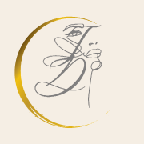
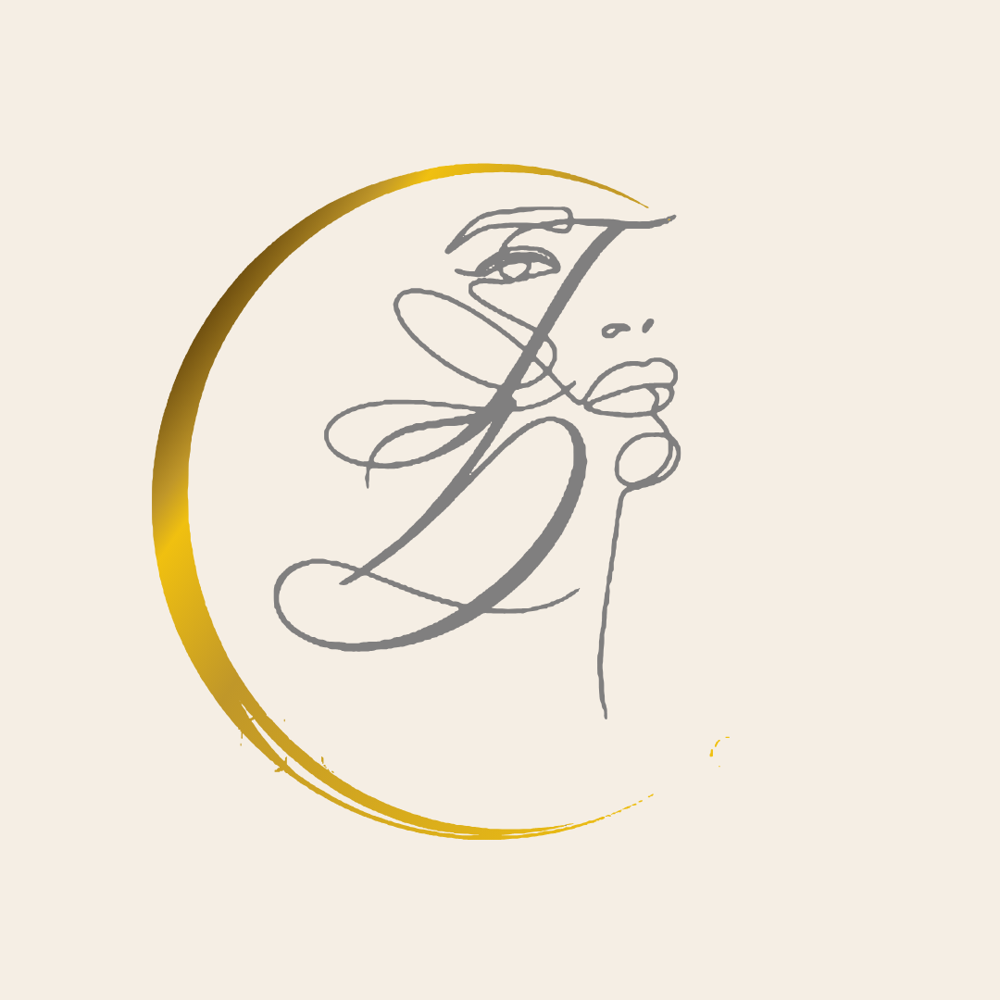
Logo-Farben – nur im Logo
| Teil | Original (hell) | Auf Espresso #383028 | Einfarbig |
|---|---|---|---|
| Ring | Verlauf #705010 → #C09729 → #F0C010 (Stopps mit diesen drei Farben, an das Original angepasst) | wie hell | Gold #987848, Espresso #383028 oder Creme #F5EEE4 |
| Linienzeichnung | #807F7F | Creme #F5EEE4 | wie Ring |
| „Cosmetic“ | #000000 (wie im Original gemessen) | Creme #F5EEE4 | wie Ring |
| „TIMEOUT“ (Zusatz) | Espresso #383028 | Creme #F5EEE4 | – |
| „ANNWEILER“ (Zusatz) | Mokka #6C5946 | Creme #F5EEE4 | – |
- „ANNWEILER“ nie in Gold (auch nicht Gold hell); der Zusatz ist Text und folgt den Farbregeln im Kapitel Farben.
- Auf mittleren Tönen (Taupe, Fotos) nur das Logo auf einer ruhigen Creme- oder Espresso-Fläche einsetzen.
- In den einfarbigen Dateien dienen
#000/#fffnur als Maske für die Freistellung; sichtbar ist allein die gewählte Farbe.
Logo
Welches Logo wofür
Alle Varianten liegen im Ordner „Designkonzept“ (Kapitel Ihr Designkonzept), als PNG mit transparentem Grund, wenn nicht anders angegeben, und als Vektordatei für Druckerei und Folie.
| Einsatz | Variante | Größe |
|---|---|---|
| Website, Kopfbereich am Rechner | Logo mit Zusatz, quer | 240–300 px breit |
| Website, Kopfbereich auf hochauflösenden Bildschirmen | Logo mit Zusatz, quer (doppelte Auflösung) | über 600 px breit |
| Website, Kopfbereich am Smartphone | Logo kompakt (Bildzeichen mit „TIMEOUT“) | 40–48 px hoch |
| Website, Fußbereich auf Espresso | Logo mit Zusatz, quer, für dunklen Grund | 240–320 px breit |
| Startseite (Produktlinie), Drucksachen hochkant | Logo mit Zusatz, gestapelt, oder Logo | ab 120 px hoch |
| Logo ohne Zusatz (wo „TIMEOUT“ schon daneben steht) | Logo | ab 120 px hoch |
| Auf Espresso ohne Zusatz | Logo auf dunklem Grund | ab 120 px hoch |
| Stempel, Gravur, Folie, Prägung | Logo einfarbig (Vektordatei) | ab 25 mm hoch |
| Bildzeichen allein | Bildzeichen, auch für dunklen Grund | ab 16 px |
| Favicon im Browser-Tab | Favicon-Fassung | 16–48 px |
| Symbol auf dem iPhone-Startbildschirm | Favicon-Fassung auf Creme | 180 × 180 px |
| Symbol auf Android und für Web-Apps | Favicon-Fassung auf Creme | 192 × 192 und 512 × 512 px |
| Instagram-Profilbild | Bildzeichen auf Creme | 1080 × 1080 px, Instagram schneidet rund zu |
| Google-Unternehmensprofil, Logo | Bildzeichen auf Creme | 720 × 720 px, quadratisch oder rund |
| Druckerei, spätere Exporte | alle Varianten als Vektordatei | beliebig groß |
03
Farben
Creme, Sand und Espresso tragen die Flächen, Gold setzt Akzente.
#F5EEE4 · RGB 245, 238, 228
Grund; Text auf dunkel
#E4D8CF · RGB 228, 216, 207
Abschnitt / Karte
#CAB6A2 · RGB 202, 182, 162
Abschnitt kräftig; Linie
#383028 · RGB 56, 48, 40
Dunkler Bereich; Text
#6C5946 · RGB 108, 89, 70
Zweittext; Formularrahmen
#987848 · RGB 152, 120, 72
Akzent
#725A36 · RGB 114, 90, 54
Links
#C9A96E · RGB 201, 169, 110
Akzent auf dunkel
#2C241C · RGB 44, 36, 28
Primär-Button Hover
Farben
Erlaubte Farbkombinationen
| Muster | Schrift bzw. Linie | Hintergrund | Einsatz |
|---|---|---|---|
| Aa | Espresso | Creme | Fließtext |
| Aa | Espresso | Sand | Fließtext |
| Aa | Espresso | Taupe | Fließtext |
| Aa | Mokka | Creme | Fließtext |
| Aa | Mokka | Sand | Fließtext |
| Aa | Mokka | Taupe | nur große Schrift (ab 24 px) |
| Aa | Gold | Creme | nur große Schrift (ab 24 px) |
| Aa | Gold dunkel | Creme | Fließtext |
| Aa | Gold dunkel | Sand | Fließtext |
| Aa | Creme | Espresso | Fließtext |
| Aa | Gold hell | Espresso | Fließtext |
| Aa | Creme | Button Hover | Fließtext |
| Mokka | Creme | Rahmen, Bedienelemente | |
| Mokka | Sand | Rahmen, Bedienelemente |
Nur diese Kombinationen verwenden: Sie sind gut lesbar. Andere Kombinationen erst nach Absprache einsetzen.
Farben
Regeln
- Gold nur für Schrift ab 24 px (bzw. 18,7 px fett) auf Creme, sonst nur für Linien, Icons und Dekor. Auf Sand ist Gold zu schwach lesbar.
- Kein Weiß und kein Schwarz: Weiß wird Creme, Schwarz wird Espresso.
- Links immer unterstrichen in Gold dunkel; nie Browser-Blau.
- Schrift auf Fotos nur mit Espresso-Überlagerung (mind. 60 %) oder auf einer Creme-Fläche.
- Neue Farbkombinationen erst festlegen und auf Lesbarkeit prüfen.
Logo-Farben – nur im Logo, nie als Text- oder Flächenfarbe
Gold dunkel
Gold mittel
Gold hell
Linie
Schriftzug
Druck
Farbwerte sind RGB für Bildschirm und Druck-PDF. Die Druckerei wandelt in CMYK bzw. PDF/X; Farbabweichungen vorab mit einem Andruck prüfen.04
Typografie
Drei Schriften, alle unter der SIL Open Font License: Cormorant Garamond für Überschriften, Montserrat für Text, Alex Brush als Akzent.
Cormorant Garamond
Überschriften H1–H3
ABCDEFGHIJKLMNOPQRSTUVWXYZ
abcdefghijklmnopqrstuvwxyz
ÄÖÜ äöüß 0123456789 € · – „“ &
Cormorant Garamond 500
Ihre Auszeit in Annweiler
Cormorant Garamond 600
Montserrat
Text, Kapitälchen, Buttons, Widgets
ABCDEFGHIJKLMNOPQRSTUVWXYZ
abcdefghijklmnopqrstuvwxyz
ÄÖÜ äöüß 0123456789 € · – „“ &
Montserrat 400
Ihre Auszeit in Annweiler
Montserrat 500
Ihre Auszeit in Annweiler
Montserrat 600
Alex Brush
Akzent, höchstens eine Zeile je Seite
ABCDEFGHIJKLMNOPQRSTUVWXYZ
abcdefghijklmnopqrstuvwxyz
ÄÖÜ äöüß 0123456789 € · – „“ &
Alex Brush 400
- Fließtext nie in Cormorant Garamond oder Alex Brush.
- Alex Brush nie für Informationen (Preise, Zeiten, Navigation), nur als Stimmung.
- Auch Buchung und Formulare auf der Website in Montserrat setzen. Libre Baskerville, Open Sans und Arial entfallen.
Typografie
Textstile (Desktop-Größen)
Cormorant Garamond 500 · 56px / 40px mobil
Cormorant Garamond 500 · 40px / 30px mobil
Cormorant Garamond 600 · 26px / 22px mobil
Montserrat 500 · 13px · Großbuchstaben · Mokka
Montserrat 400 · 16px
Montserrat 400 · 14px
Montserrat 600 · 14px · Großbuchstaben
Alex Brush 400 · 44px / 34px mobil
05
Bildsprache
Echte Fotos aus dem Studio, ruhig und warm. Verwendet werden nur die 13 bestätigten eigenen Aufnahmen.
Studio
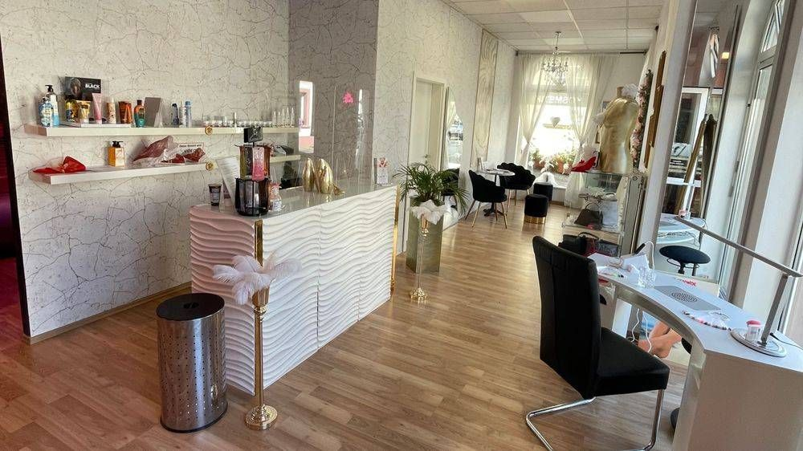


Nägel
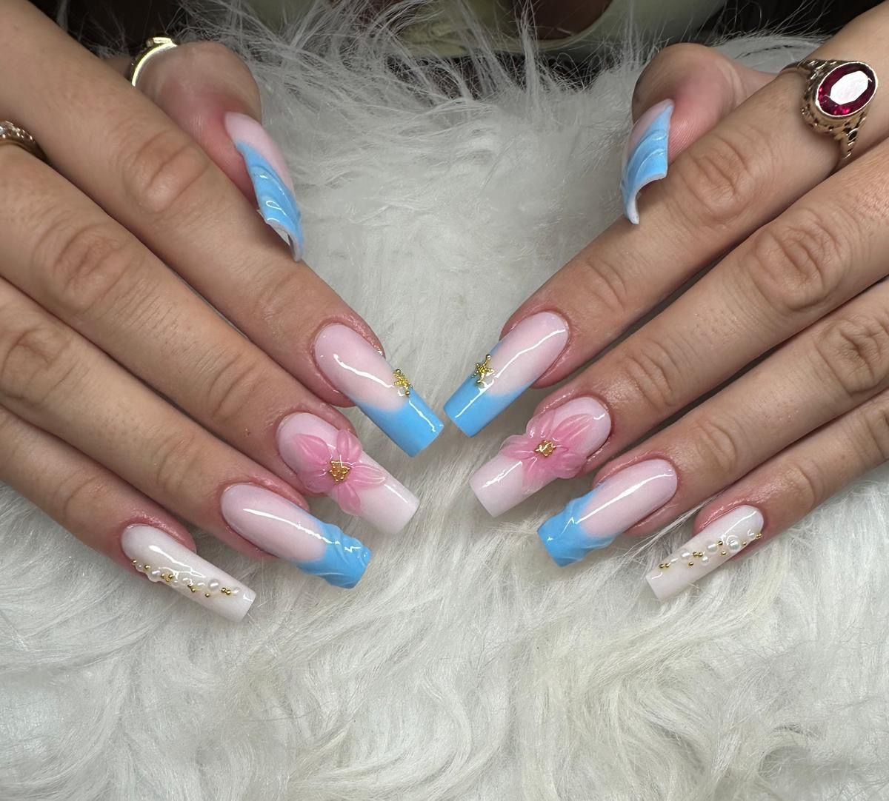
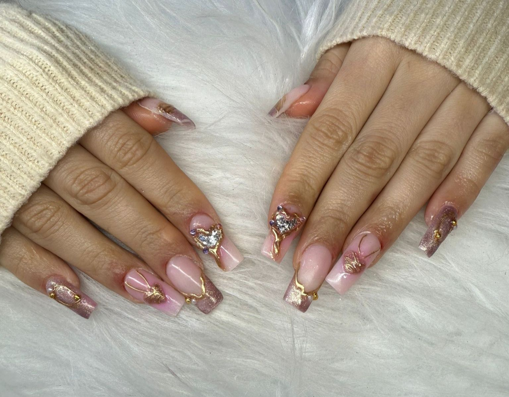

Bildsprache
Produktlinie und Bildrechte
Produkte jdcosmetic · nur im Bereich Produktlinie
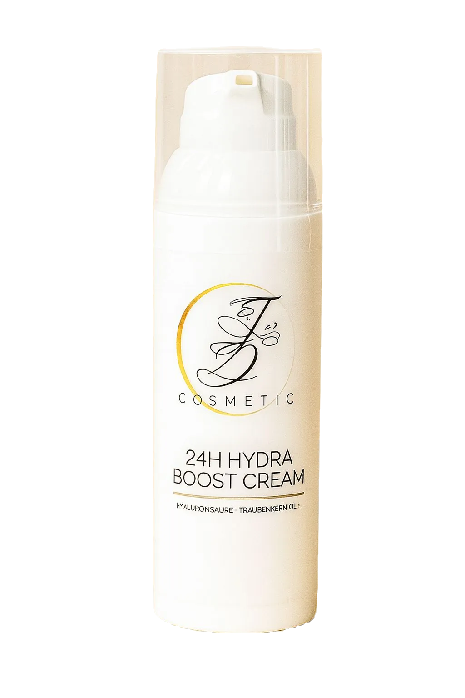
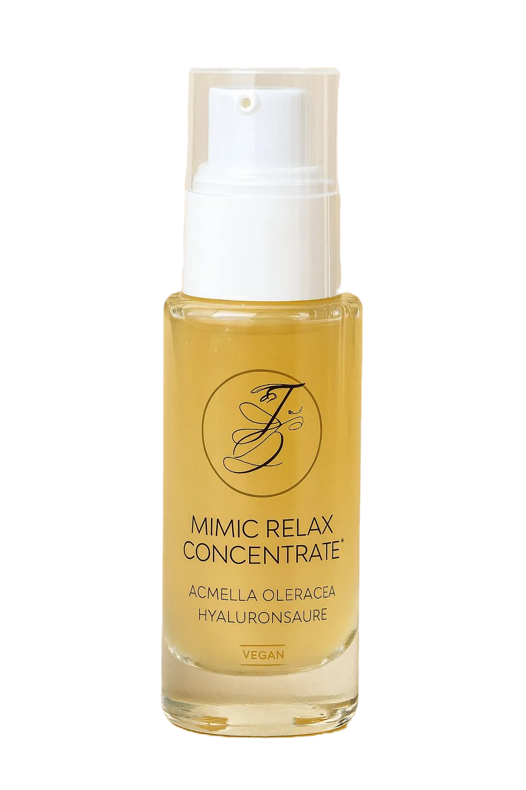


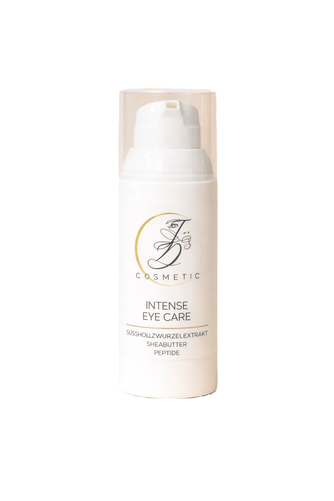
Bildrechte und Einwilligungen
- Verwendet werden nur die 13 bestätigten eigenen Aufnahmen (Nägel, Produkte nur im Bereich Produktlinie, Studio). Stock-, KI- und Fremdbilder erst nach Lizenzklärung (UrhG).
- Neue Fotos: Wer fotografiert, hat das Urheberrecht; bei Fotos von Mitarbeiterinnen oder Kundinnen das Nutzungsrecht schriftlich klären (UrhG § 31).
- Erkennbare Personen nur mit schriftlicher Einwilligung, die Kanal (Website, Instagram, Google, Print) und Zweck nennt und widerrufbar ist (KUG § 22, DSGVO Art. 7). Fotos, die einen Hautzustand zeigen, können Gesundheitsdaten sein (DSGVO Art. 9) – nur mit ausdrücklicher Einwilligung (rechtlich prüfen lassen).
- KI-erzeugte Bilder realistisch wirkender Personen kennzeichnen (KI-Verordnung) – besser ganz darauf verzichten.
Bildsprache
Do und Don't
Ihre Auszeit in Annweiler am Trifels.
Do
- Echte Fotos aus dem Studio, den Räumen und der eigenen Arbeit (Wert „Persönlich und vor Ort“).
- Nur die 13 bestätigten Aufnahmen oder neue eigene Fotos mit geklärten Rechten.
- Schrift auf Fotos nur mit Espresso-Überlagerung (mind. 60 %) oder auf einer Creme-Fläche.
- Google-Titelbild: Foto im Querformat ohne Schrift, z. B. eine Studio-Aufnahme.
Don't
- Keine Vorher/Nachher-Bilder.
- Keine Stock-, KI- oder Fremdbilder ohne Lizenzklärung; KI-Personen besser ganz vermeiden.
- Keine erkennbaren Personen ohne schriftliche Einwilligung.
- Logo nicht auf unruhige Fotos legen.
06
Gestaltungselemente
Wenige, ruhige Elemente: die Goldlinie, der Bogen aus dem Ring, viel Raum. Maße aus dem Prototyp der neuen Website.
Goldlinie
Linie in Gold, 72px breit, 1 px stark, Abstand 20px über und unter. Steht unter Überschriften und Kapitälchen, links bündig oder zentriert.
Trennlinie
1 px in Taupe zwischen Listenzeilen, Preisen und unter dem Kopfbereich.
Hinweis
Bogen aus dem Ring
Offener Bogen nach dem Vorbild des Rings, als 1-px-Linie in Gold (auf Espresso Gold hell), groß und angeschnitten an Flächenrändern. Nie das Logo selbst anschneiden oder verfremden (Kapitel Logo).
Raster und Abstände
| Inhaltsbreite | höchstens 1180px, Seitenrand 24px |
| Abschnitte | Innenabstand 88px oben und unten, eng 56px |
| Kacheln, Karten | Abstand 28px; Bildraster 16px |
| Abschnittsfarben | Creme und Sand im Wechsel, Taupe für hervorgehobene Abschnitte, Espresso für den Footer |
| Mobil | Umbruch bei 900 px, Mobil-Schriftgrößen laut Textstilen |
Gestaltungselemente
Buttons und Bedienelemente
Primär
Primär, Hover
Inaktiv
Sekundär
Sekundär, Hover
Formularrahmen Mokka
Text Montserrat 600, 14 px, Großbuchstaben, Sperrung 0,12 em. Keine Buttons in Gold (zu schwacher Kontrast). Links immer unterstrichen in Gold dunkel, auf Espresso in Gold hell: Beispiel-Link.
| Art | Normal | Hover | Inaktiv |
|---|---|---|---|
| Primär | Grund #383028, Text #F5EEE4 | Grund #2C241C | Grund #E4D8CF, Text #6C5946 |
| Sekundär | Rahmen und Text #383028, Grund transparent | Grund #E4D8CF | wie Primär inaktiv |
Social Media
Stories, Highlights, Titel- und Profilbilder
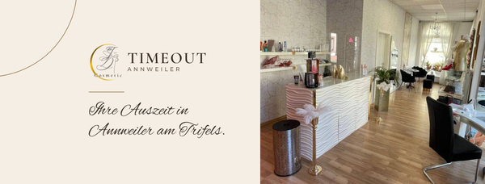
1640 × 624 px
1024 × 576 px
1080 × 1080 px, rund
Social Media
Regeln und Rhythmus
Für alle Social-Texte gilt: Anbieter ist TIMEOUT Annweiler; Behandlungen mit Erlaubnisfrage (Microneedling und Needling-Varianten, Mesoporation, BB Glow, Veröden, Kaltplasma) werden bis zur Klärung nicht in Beiträgen, Stories, Angeboten oder Hashtags beworben. Keine Vorher/Nachher-Bilder. Bilder nur aus den 13 bestätigten Aufnahmen oder neue eigene Fotos mit geklärten Rechten.
Highlights
| Nr. | Titel | Inhalt |
|---|---|---|
| 1 | Studio | Räume, Team, Anfahrt |
| 2 | Gesicht | Gesichtsbehandlungen (ohne Behandlungen mit Erlaubnisfrage) |
| 3 | Wimpern | Wimpernverlängerung, Lash Lifting, Brauen |
| 4 | Nägel | Maniküre, Gelnägel, Pediküre |
| 5 | Termine | Öffnungszeiten, Telefon, freie Termine, Angebote |
Titel höchstens 8 Zeichen, damit Instagram sie nicht kürzt.
Angebote nur mit Leistung, Preis und Zeitraum vom Studio; lassen Sie jede ausgefüllte Fassung vor der Veröffentlichung rechtlich prüfen (Werbeaussagen, HWG/UWG).
Die Angebotsvorlagen tragen ein Band, das auf auszufüllende Platzhalter hinweist. Das Band gehört nur zur Vorlage: Beim Ausfüllen entfernen.
Posting-Rhythmus
| Kanal | Rhythmus | Inhalt |
|---|---|---|
| Instagram-Beiträge | 2 je Woche (z. B. Dienstag und Freitag) | im Wechsel: Leistung vorgestellt, Pflegetipp, Studio-Einblick; Angebot einmal im Monat zum Monatsanfang |
| Instagram-Stories | an Öffnungstagen 1–3 | freie Termine, Blick ins Studio, Hinweis auf neue Beiträge |
| Google-Beiträge | alle 1–2 Wochen | Angebot des Monats, Öffnungszeiten an Feiertagen, neue Leistung |
| nur nach Klärung, ob es ein Facebook-Konto des Studios gibt; dann Instagram-Beiträge teilen | – | |
| Nachrichten und Bewertungen | an Öffnungstagen innerhalb eines Werktags beantworten | freundlich, ohne Gesundheitsangaben öffentlich zu wiederholen |
Lieber regelmäßig wenig als selten viel. Bevor ein Beitrag mit Behandlungsbezug online geht: Wortliste prüfen (Kapitel Markenkern und Tonalität), bei neuen Aussagen vorab rechtlich prüfen lassen.
08
Visitenkarte, Terminkarte, Gutschein und Preisliste als druckfertige PDF mit 3 mm Anschnitt; Kontaktdaten wörtlich aus dem Footer der Website.
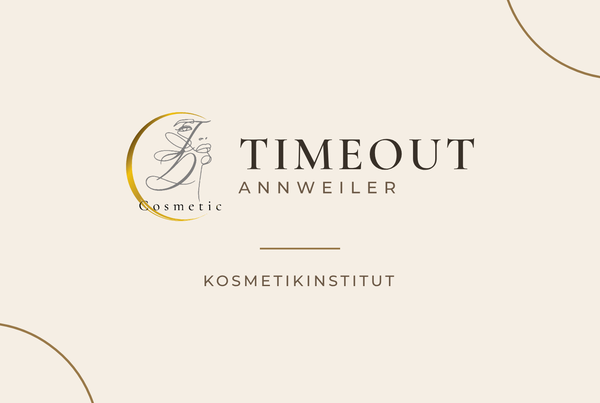
85 × 55 mm + 3 mm Anschnitt
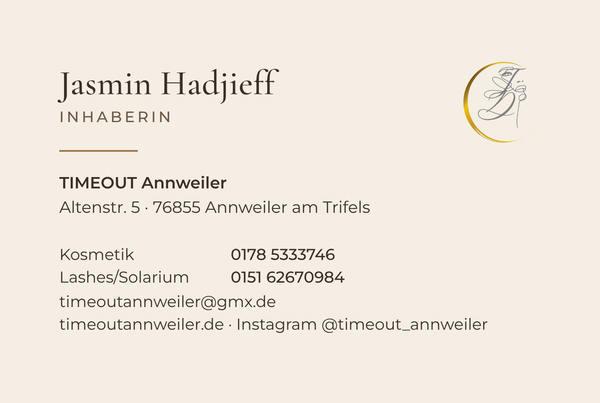
85 × 55 mm + 3 mm Anschnitt
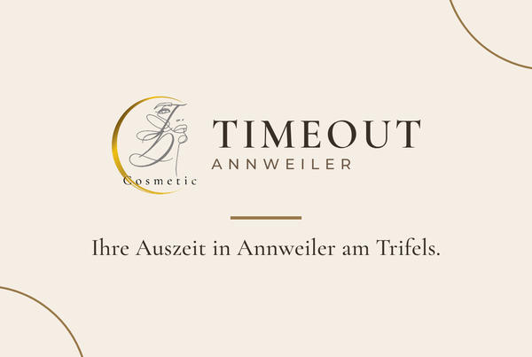
85 × 55 mm + 3 mm Anschnitt
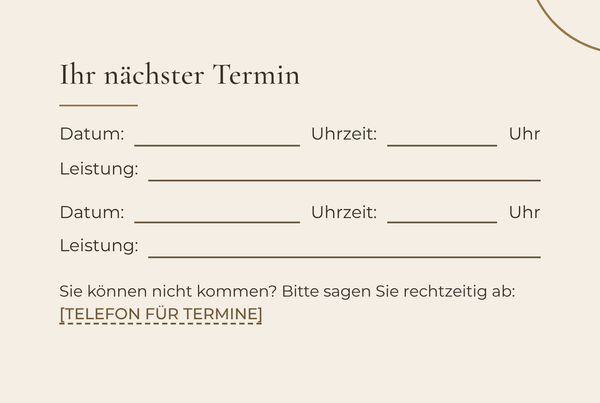
85 × 55 mm + 3 mm Anschnitt
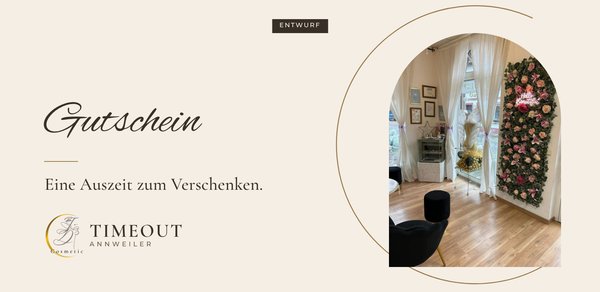
210 × 99 mm + 3 mm Anschnitt
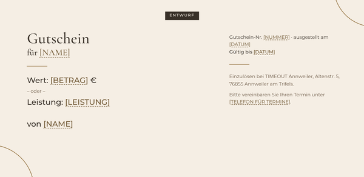
210 × 99 mm + 3 mm Anschnitt
Preisliste und Druckhinweise
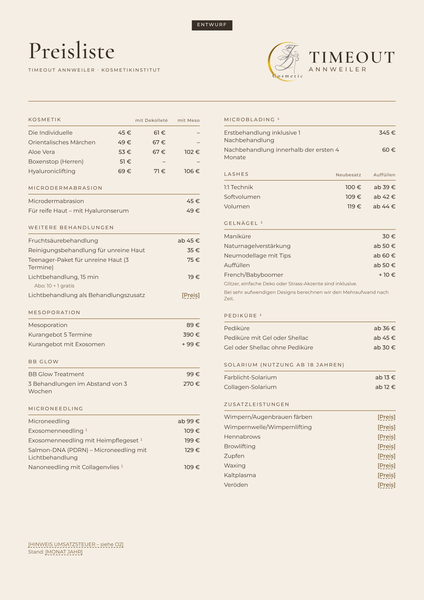
210 × 297 mm
Für die Druckerei
- PDF in RGB; die Druckerei wandelt in CMYK bzw. PDF/X.
- Karten und Gutschein mit 3 mm Anschnitt je Seite; Schriften sind eingebettet (SIL OFL erlaubt das).
- Platzhalter in eckigen Klammern […] vor dem Druck füllen; nichts raten.
- Gutschein und Preisliste tragen in der Vorlage ein Hinweisband; es gehört nur zur Vorlage und entfällt beim Ausfüllen.
- Die Creme-Fläche der Seiten ist Teil der Vorlage; beim Ausdruck auf Büropapier „Hintergrundgrafiken“ ausgeschaltet lassen. Schneidemarken setzt die Druckerei.
Gutschein
Gutscheine verjähren ohne Angabe in drei Jahren ab Ende des Jahres, in dem sie ausgestellt wurden (§§ 195, 199 BGB). Eine kürzere Frist kann unwirksam sein, wenn sie die Beschenkten unangemessen benachteiligt (§ 307 BGB); Gerichte haben z. B. ein Jahr bei Wertgutscheinen beanstandet. Vorschlag: „Gültig bis [31.12. des dritten Jahres nach Ausstellung]“. Zusätze wie „Keine Barauszahlung“ oder „Bei Preisänderungen …“ erst nach rechtlicher Klärung drucken. Keine Gutscheine über Behandlungen mit Erlaubnisfrage, solange sie offen ist.
Preisliste
- Keine Beschreibungen oder Wirkaussagen in der Preisliste; nur Name, Umfang und Preis.
- Exosomen-Zeilen erst drucken, wenn das Studio bestätigt, dass das Serum keine Bestandteile menschlichen Ursprungs enthält, sonst weglassen.
- Die Angabe „Shop Now! 10 €“ unter Zusatzleistungen (noch offen) entfällt, bis klar ist, wofür sie gilt.
- Die Bezeichnungen „Reinigungsbehandlung für unreine Haut“, „Teenager-Paket für unreine Haut“ und „Collagen-Solarium“ sind rechtlich zu klären, bis dahin nicht verwenden.
- Umsatzsteuer-Hinweis: Auf der Website steht kein Hinweis; ob das Studio Kleinunternehmerin ist, ist offen. Preise gegenüber Verbraucherinnen müssen Gesamtpreise einschließlich Umsatzsteuer sein (§ 3 PAngV). Je nach Antwort eine der Zeilen „Alle Preise inkl. gesetzlicher MwSt.“ oder „Gemäß § 19 UStG wird keine Umsatzsteuer berechnet.“ – Auswahl nach Antwort des Studios. Die Preisliste dient auch als Preisaushang im Studio (Preisverzeichnis für Leistungen nach PAngV; Vorschrift vor Druck gegen die amtliche Fassung prüfen).
- Schulungen bekommen eine eigene Preisliste (du-Ansprache, Kurspreise der Schulungen) als eigenes Vorhaben.
09
Studio und Alltag
Türschild, Fensterbeschriftung, E-Mail-Signatur und Briefbogen – Anrede „Sie“, Kontaktdaten wörtlich aus dem Footer.
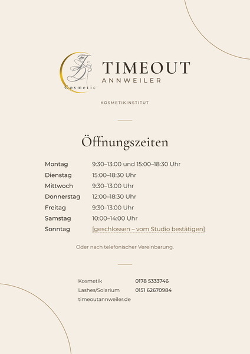
A4 hoch, 210 × 297 mm
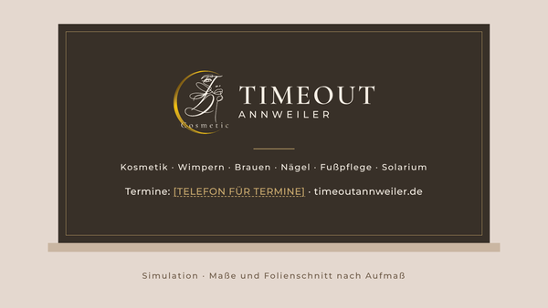
Ansicht, Maße nach Aufmaß
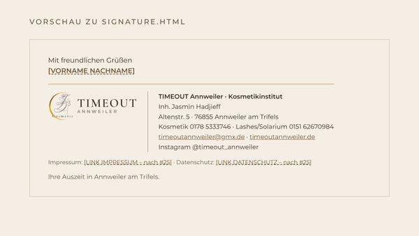
fertige Datei zum Einfügen
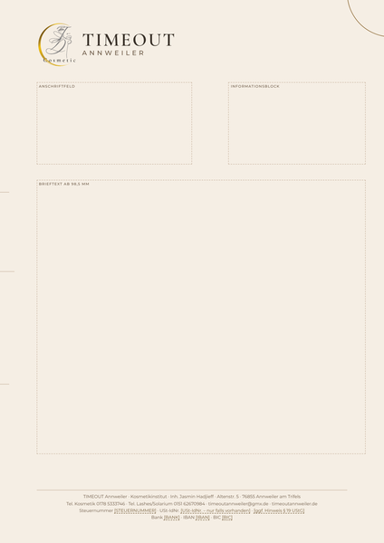
A4 hoch, 210 × 297 mm
Studio und Alltag
Hinweise zu den Vorlagen
Türschild
Zeiten wörtlich aus dem Footer der Website, nur in eine Tabelle gebracht. Bestätigung durch das Studio steht aus.
Der Sonntag steht nicht im Footer; deshalb als Platzhalter.
Fensterbeschriftung
Nur Leistungsgruppen ohne Erlaubnisfrage; keine Preise, keine Aktionen (Fenster ist dauerhafte Werbung).
Die Vorlage ist eine gekennzeichnete Simulation; Maße und Folienschnitt nach Aufmaß am Schaufenster.
E-Mail-Signatur
Keine Werbezeile zu Behandlungen in der Signatur; erlaubt ist der Claim als letzte Zeile.
Die Signatur liegt als fertige Datei zum Einfügen bei; das Logo steht als [LOGO-URL] und wird durch die
Adresse eines hochgeladenen PNG ersetzt.
Briefbogen nach DIN 5008
TIMEOUT Annweiler · Kosmetikinstitut · Inh. Jasmin Hadjieff · Altenstr. 5 · 76855 Annweiler am Trifels Tel. Kosmetik 0178 5333746 · Tel. Lashes/Solarium 0151 62670984 · timeoutannweiler@gmx.de · timeoutannweiler.de Steuernummer [STEUERNUMMER] · USt-IdNr. [USt-IdNr. – nur falls vorhanden] · [ggf. Hinweis § 19 UStG] Bank [BANK] · IBAN [IBAN] · BIC [BIC]
- Firmierung „TIMEOUT Annweiler · Kosmetikinstitut“ ist vorläufig; das Studio legt sie fest.
- Rechnungen brauchen Steuernummer oder USt-IdNr. (§ 14 Abs. 4 UStG); Kleinunternehmerinnen den Hinweis auf § 19 UStG. Werte nur vom Studio übernehmen.
- Registereintrag oder Kammer erst ergänzen, wenn sie bestätigt sind.
10
Ihr Designkonzept
Alles, was Sie für Logo, Schriften und Vorlagen brauchen, liegt gesammelt im Ordner „Designkonzept“.
| Ordner | Was darin liegt | Wofür |
|---|---|---|
| Logo | Das Logo in allen Varianten: farbig, einfarbig in Gold, Espresso oder Creme, für hellen und dunklen Grund, mit dem Zusatz „TIMEOUT · Annweiler“ (quer, gestapelt, kompakt) und als Bildzeichen allein. Dazu Favicon, App-Icon und Profilbilder für Instagram und Google. | Als Bilddatei (PNG) für Bildschirm, Website und Office, als Vektordatei für Druckerei, Schilder, Folie und Gravur |
| Schriften | Cormorant Garamond, Montserrat und Alex Brush mit den Lizenztexten. Alle drei dürfen kostenlos genutzt werden. | Für Briefe, Vorlagen und Dokumente; zum Installieren am Rechner die Fassungen von Google Fonts verwenden |
| Vorlagen | Social Media: Beiträge, Stories, Highlight-Cover, Titel- und Profilbilder. Print: Visitenkarte, Terminkarte, Gutschein, Preisliste. Studio: Türschild, Fensterbeschriftung, E-Mail-Signatur, Briefbogen. | Instagram, Facebook, Google, Druckerei und Studio; Druckvorlagen als druckfertige PDF mit 3 mm Anschnitt |
| Markenhandbuch | Dieses Handbuch als PDF und als Online-Seite. | Für alle, die mit der Marke arbeiten |
So gehen Sie vor
- Logo und Vorlagen immer aus dem Ordner nehmen und nicht neu abzeichnen, abfotografieren oder verändern.
- Farben und Schriften nur wie in den Kapiteln Farben und Typografie verwenden.
- Für die Druckerei die PDF- und Vektordateien weitergeben, für Bildschirm und Office die PNG-Dateien.
11
Rechtliches
Kurzregeln für alle, die Texte und Bilder für TIMEOUT veröffentlichen.
Werbeaussagen
- Kein Krankheitsbezug – nicht Akne, Narben, Entzündungen, Hautkrankheiten (HWG).
- Keine Studien-, Prozent- oder Haltbarkeitsangaben ohne geprüften Beleg (HWG, UWG).
- Keine Garantien und Superlative („jede Haut“, „ultimativ“, „sorgt für“) (UWG).
- Keine Aussagen über Zellen, Collagenbildung, Wachstumsfaktoren oder Regeneration.
- Keine Vorher/Nachher-Bilder, solange die Fragen zu Einwilligung und Bildbearbeitung offen sind (HWG § 11).
- Behandlungen mit Erlaubnisfrage (Microneedling und Varianten, Mesoporation, BB Glow, Veröden, Kaltplasma) nur sachlich auf Website und Preisliste; keine Posts, Aktionen, Gutscheine oder Hashtags.
- Anbieter klar nennen: TIMEOUT Annweiler, nicht JD Cosmetic (UWG § 5).
- Angebote mit Zeitraum und echtem Vergleichspreis; keine Streichpreise ohne Enddatum (PAngV, UWG).
- Solarium: Nutzung ab 18 Jahren nennen, keine Gesundheits- oder Stimmungsversprechen, keine Werbung an Jugendliche (NiSG).
- Lassen Sie neue Texte zu Behandlungen vor der Veröffentlichung rechtlich prüfen.
Rechtliches
Bilder, Impressum, Gutscheine, Preise
Bildrechte und Einwilligungen
- Verwendet werden nur die 13 bestätigten eigenen Aufnahmen (Nägel, Produkte nur im Bereich Produktlinie, Studio). Stock-, KI- und Fremdbilder erst nach Lizenzklärung (UrhG).
- Neue Fotos: Wer fotografiert, hat das Urheberrecht; bei Fotos von Mitarbeiterinnen oder Kundinnen das Nutzungsrecht schriftlich klären (UrhG § 31).
- Erkennbare Personen nur mit schriftlicher Einwilligung, die Kanal (Website, Instagram, Google, Print) und Zweck nennt und widerrufbar ist (KUG § 22, DSGVO Art. 7). Fotos, die einen Hautzustand zeigen, können Gesundheitsdaten sein (DSGVO Art. 9) – nur mit ausdrücklicher Einwilligung (rechtlich prüfen lassen).
- KI-erzeugte Bilder realistisch wirkender Personen kennzeichnen (KI-Verordnung) – besser ganz darauf verzichten.
Impressum auf Social Media und Google
- Geschäftliche Profile (Instagram, Facebook, Google) brauchen ein Impressum, das mit höchstens zwei Klicks erreichbar ist (§ 5 DDG). Lösung: Link in der Bio bzw. im Profil auf die Impressum-Seite der Website.
- Die Seiten Impressum und Datenschutz fehlen heute und werden gesondert erstellt. Bis dahin ist jedes geschäftliche Profil ohne Impressum angreifbar – höchste Priorität.
- Social-Media-Symbole auf der Website nur auf eigene Konten verlinken.
Gutscheine
- Gültigkeit mindestens bis zum Ende der gesetzlichen Verjährung (drei Jahre ab Jahresende, §§ 195, 199 BGB); kürzere Fristen nur nach rechtlicher Klärung.
- Gutschein-Nummer und Ausstellungsdatum eintragen und im Studio notieren (Nachweis bei Einlösung).
- Keine Zusatzbedingungen ohne rechtliche Prüfung; keine Gutscheine für Behandlungen mit Erlaubnisfrage.
Preise
- Gesamtpreise angeben; Umsatzsteuer-Hinweis nach Klärung, ob das Studio Kleinunternehmerin ist (PAngV § 3).
- „ab“-Preise nur, wenn es die Leistung zu diesem Preis wirklich gibt.
- Preisliste im Studio sichtbar aushängen (Preisverzeichnis, PAngV).
Markenhandbuch
Impressum des Handbuchs
Erstellt für
TIMEOUT Annweiler
Inhaberin Jasmin Hadjieff
Altenstr. 5
76855 Annweiler am Trifels
Ausgabe
Erstellt für TIMEOUT Annweiler, Version 1.0, Stand 10. Oktober 2026
Online-Fassung und Druckfassung (PDF, A4 quer)
Rechte
- Logo: eigene Gestaltung der Familie; Nutzung und Bearbeitung für TIMEOUT erlaubt.
- Schriften: Cormorant Garamond, Montserrat, Alex Brush – SIL Open Font License 1.1 (Lizenztexte liegen bei den Schriften im Ordner „Designkonzept“).
- Fotos: eigene Aufnahmen des Studios, bestätigt am 2026-10-09.
Hinweis
Die Hinweise zu Werbeaussagen und Rechtlichem sind keine Rechtsberatung im Sinne des RDG. Texte zu Behandlungen und Angeboten vor der Veröffentlichung rechtlich prüfen lassen, durch eine Anwältin oder einen Anwalt.
07
Social Media
Vorlagen für Instagram, Facebook und Google mit den abgestimmten Texten. Anbieter ist immer TIMEOUT Annweiler.
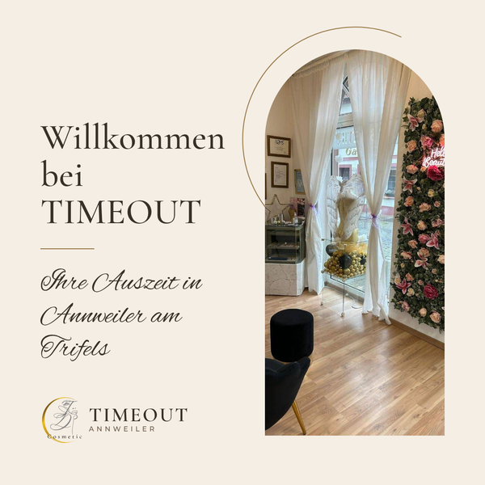
1080 × 1080 px
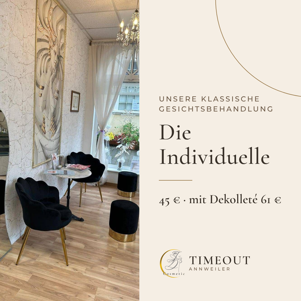
1080 × 1080 px
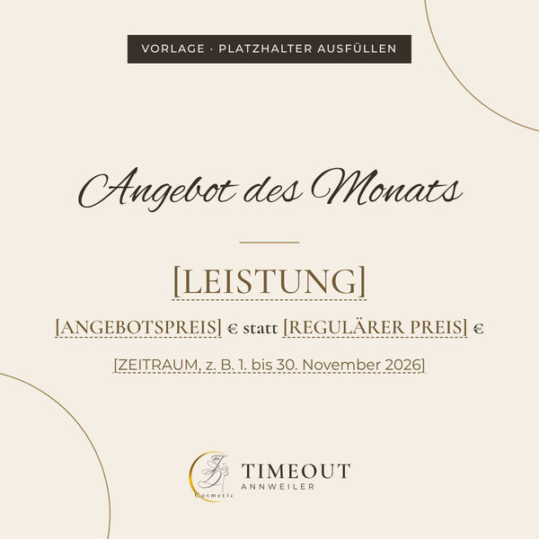
1080 × 1080 px
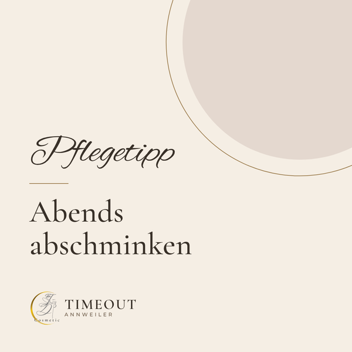
1080 × 1080 px
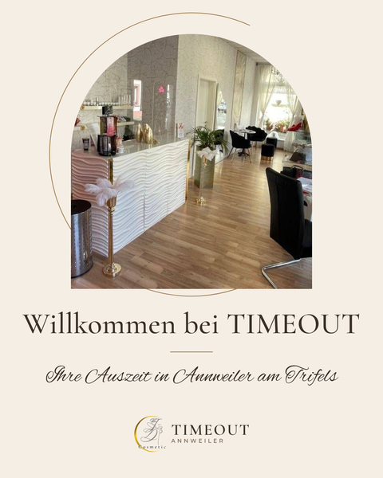
1080 × 1350 px
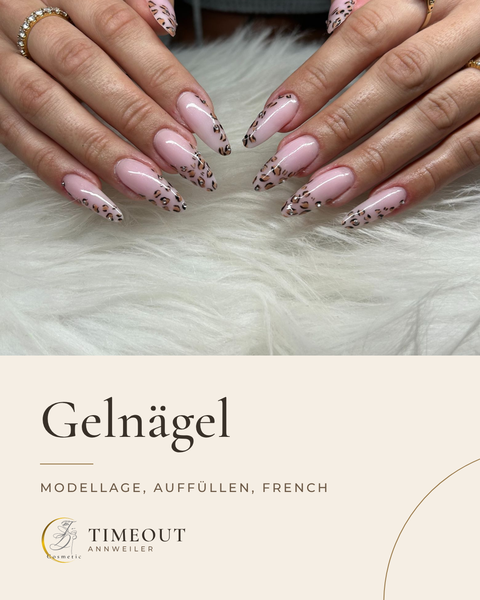
1080 × 1350 px
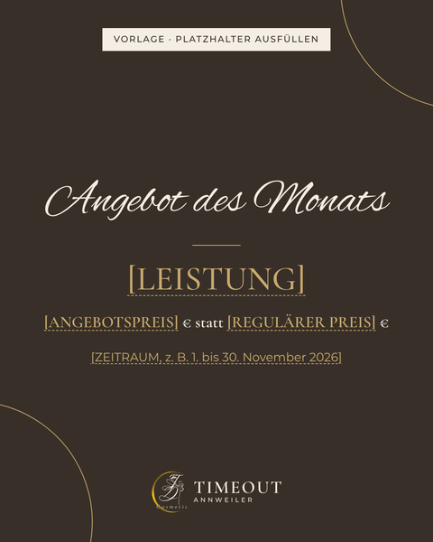
1080 × 1350 px
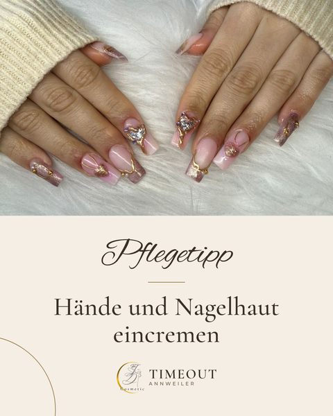
1080 × 1350 px